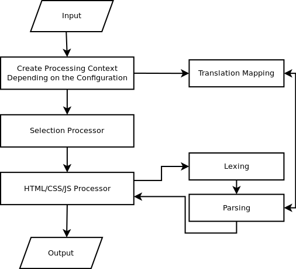
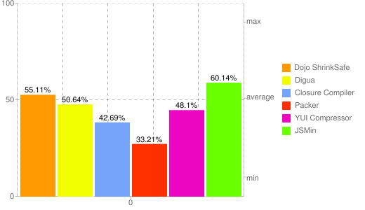
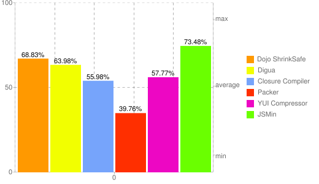

Author: Eng. Alexandru Ciminian
Supervisor: S.L. Dr. Eng. Ciprian Dobre
July 4th, 2011
Research on a wide variety of hypertext systems has shown that users need response times of less than one second when moving from one page to another if they are to navigate freely through an information space.
The page with 10 results took .4 seconds to generate. The page with 30 results took .9 seconds. Half a second delay caused a 20% drop in traffic. Half a second delay killed user satisfaction.
Accept-Encoding: gzip,deflate
Vary: Accept-Encoding Content-Encoding: gzip
Digua is a Java library that can be used to minify websites and obfuscate code. It is a versatile solution that can be used for various types of input.
Similar projects:

The I/O classes are flexible and genericized, they make Digua potentially usable in a variety of contexts.
The context holds necessary information for processing: I/O sources, translation map, links to parent contexts.
The lexers and parsers are automatically generated from ANTLR grammars and hold the actual intelligence behind processing the sources.
The processors coordinate the minification process. They make decisions based on the context and delegate lexing and parsing to the appropriate classes. Also, they hold specific utility functions for minification.
@parser : : members {
private CSS21Processor getCSSProcessor ( ) {
return ( CSS21Processor ) getProcessor ( ) ;
}
}
term
: unaryOperator?
( NUMBER | PERCENTAGE | LENGTH | EMS | EXS | ANGLE | TIME | FREQ )
| possibleColor=IDENT
{
$possibleColor.setText(getCSSProcessor().minimizeColor($possibleColor.text));
}
| URI
| hexColor
;
hexColor
: hexColorName=HASH
{
$hexColorName.setText(getCSSProcessor().minimizeColor($hexColorName.text));
}
;
{
"logfile" : "benchmark.log",
"outfile" : "benchmark.out",
"minifiers": {
"digua" : {
"name" : "Digua",
"version" : "0.2",
"executable" : "digua.jar",
"arguments" : "-s {src} -d {dst} -n"
},
[...]
},
"benchmarks": {
"prototype" : {
"name" : "Minification for Prototype.js",
"minifiers" : [ "yui", "closure", "packer", "jsmin", "dojo" ],
"src" : "dist/prototype.js",
"dst" : "dist/{library}-prototype.min.js"
},
[...]
},
"validation" : {
"prototype" : {
"executable": "cd tests/prototype/; rake test BROWSERS=firefox; pkill firefox; cd ../..;"
}
}
}


All validations passed!